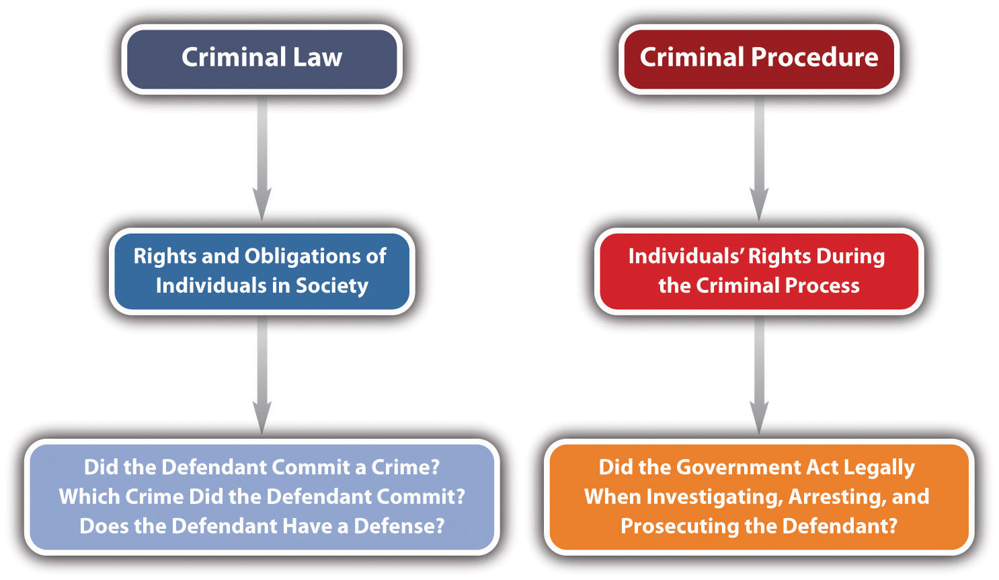

This book focuses on criminal lawA body of law defining the rights and obligations of individuals in society., but it occasionally touches on issues of criminal procedureA body of law relating to the enforcement of individuals’ rights during the criminal process., so it is important to differentiate between the two.
Criminal law generally defines the rights and obligations of individuals in society. Some common issues in criminal law are the elements of specific crimes and the elements of various criminal defenses. Criminal procedure generally concerns the enforcement of individuals’ rights during the criminal process. Examples of procedural issues are individuals’ rights during law enforcement investigation, arrest, filing of charges, trial, and appeal.
Clara and Linda go on a shopping spree. Linda insists that they browse an expensive department store. Moments after they enter the lingerie department, Linda surreptitiously places a bra in her purse. Clara watches, horrified, but does not say anything, even though a security guard is standing nearby. This example illustrates two issues of criminal law: (1) Which crime did Linda commit when she shoplifted the bra? (2) Did Clara commit a crime when she failed to alert the security guard to Linda’s shoplifting? You learn the answer to issue (1) in Chapter 11 "Crimes against Property" and issue (2) in Chapter 4 "The Elements of a Crime" and Chapter 7 "Parties to Crime".
Review the example in Section 1.2.1 "Example of Criminal Law Issues". Assume that Linda and Clara attempt to leave the store and an alarm is activated. Linda begins sprinting down the street. Colin, a police officer, just happens to be driving by with the window of his patrol car open. He hears the store alarm, sees Linda running, and begins shooting at Linda from the car. Linda is shot in the leg and collapses. Linda is treated at the hospital for her injury, and when she is released, Colin arrests her and transports her to the police station. He brings her to an isolated room and leaves her there alone. Twelve hours later, he reenters the room and begins questioning Linda. Linda immediately requests an attorney. Colin ignores this request and continues to question Linda about the reason the department store alarm went off. Whether Colin properly arrested and interrogated Linda are criminal procedure issues beyond the scope of this book. However, this example does illustrate one criminal law issue: did Colin commit a crime when he shot Linda in the leg? You learn the answer to this question in Chapter 5 "Criminal Defenses, Part 1".
Figure 1.1 Criminal Law and Criminal Procedure
Answer the following questions. Check your answers using the answer key at the end of the chapter.